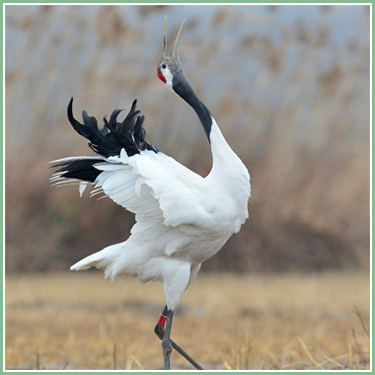
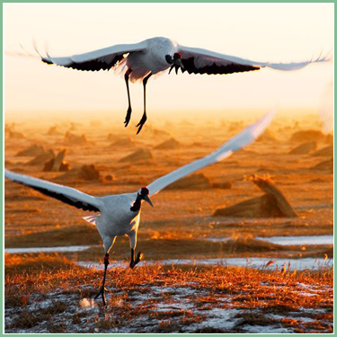
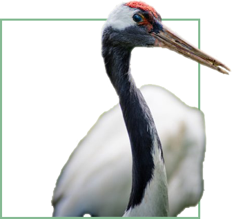

● 丹顶鹤 ●

丹顶鹤（学名：Grus japonensis）是鹤类中的一种，大型涉禽，体长120~160厘米。颈、脚较长，通体大多白色，头顶鲜红色，喉和颈黑色，耳至头枕白色，脚黑色，站立时颈、尾部飞羽和脚黑色，头顶红色，其余全为白色;飞翔时仅次级和三级飞羽以及颈、脚黑色，其余全白色，特征极明显，极易识别。幼鸟头、颈棕褐色，体羽白色而缀栗色。常成对或成家族群和小群活动。迁徙季节和冬季，常由数个或数十个家族群结成较大的群体。有时集群多达40~50只，甚至100多只。但活动时仍在一定区域内分散成小群或家族群活动。夜间多栖息于四周环水的浅滩上或苇塘边，主要以鱼、虾、水生昆虫、软体动物、蝌蚪、沙蚕、蛤蜊、钉螺以及水生植物的茎、叶、块根、球茎和果实为食。分布于中国东北，蒙古东部，俄罗斯乌苏里江东岸，朝鲜，韩国和日本北海道。

形态特征
丹顶鹤具备鹤类的特征，即三长——嘴长、颈长、腿长。大型涉禽，全长约120厘米。体羽几乎全为纯白色。头顶裸出部分鲜红色；额和眼先微具黑羽；喉、颊和颈大部为暗褐色。次级和三级飞羽黑色，延长弯曲呈弓状。尾羽短、白色。嘴灰绿色，脚灰黑色。
成鸟除颈部和飞羽后端为黑色外，全身洁白，头顶皮肤裸露，呈鲜红色。传说中的剧毒鹤顶红（也有成鹤顶血）正是此处，但纯属谣传，鹤血是没有毒的，
古人所说的“鹤顶红”其实是砒霜，即不纯的三氧化二砷，鹤顶红是古时候对砒霜隐晦的说法。丹顶鹤的尾脂腺被粉（冉羽）。幼鸟体羽棕黄，喙黄色。亚成体羽色黯淡，2岁后头顶裸区红色越发鲜艳。

栖息环境
栖息于开阔平原、沼泽、湖泊、草地、海边滩涂、芦苇以及河岸沼泽地带，有时也出现于农田和耕地中，尤其是迁徙季节和冬季。